Boar spear
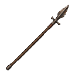
A broad-bladed spear with a crossbar to stop what it skewers.
New ImageGen variant; exact prompt retained.Seven real base IDs, native128 and direct-source64. Four new variants and three retained designs. Existing item rolls, stats and shared template art preserved.
Exact prompts and reuse record · Dark / parchment, 64px / 40px

A broad-bladed spear with a crossbar to stop what it skewers.
New ImageGen variant; exact prompt retained.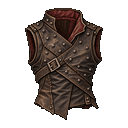
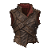
Leather set with iron studs. Better made than it looks.
New ImageGen variant; exact prompt retained.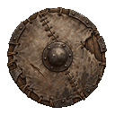
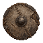
A round goblin shield of hide on wood.
New ImageGen variant; exact prompt retained.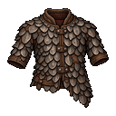
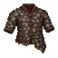
Overlapping goblin-forged scales on a stiff backing. It stops a lot, and slows you.
New ImageGen variant; exact prompt retained.
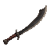
A heavy goblin blade, more chopper than sword. Crude, and it bites.
Retained broad chipped single-edged chopper; no new generation.
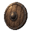
A small iron-rimmed shield, strapped to the back between fights.
Retained round timber shield with iron rim/boss; source is a large original, not an upscaled runtime icon.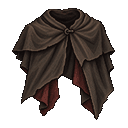
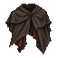
Dyed the colour of the dark. Things behind you see less of you.
Retained short dark mantle with split uneven hem and oxblood underside.